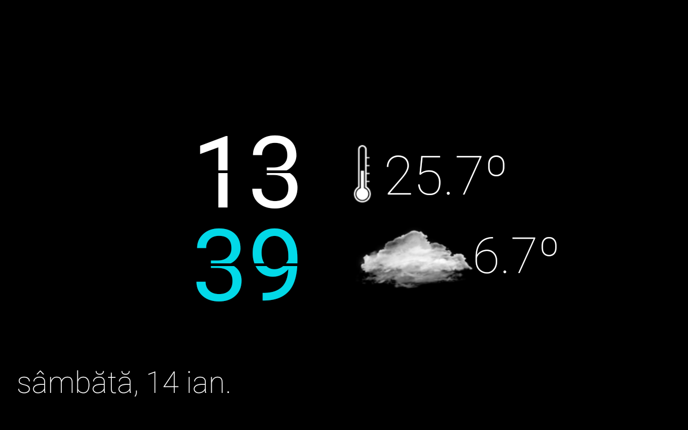
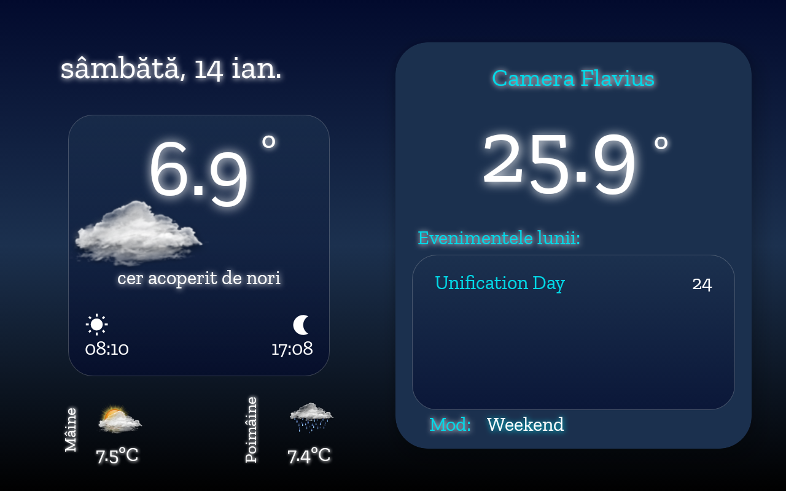
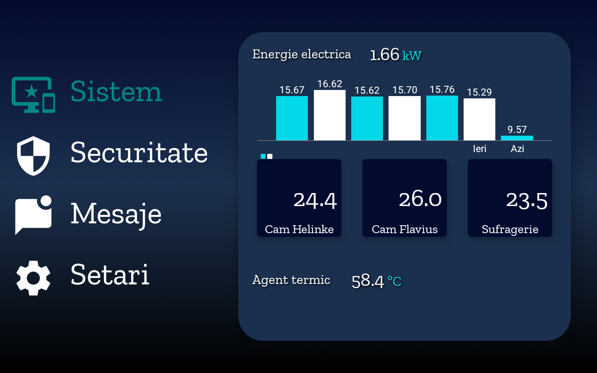
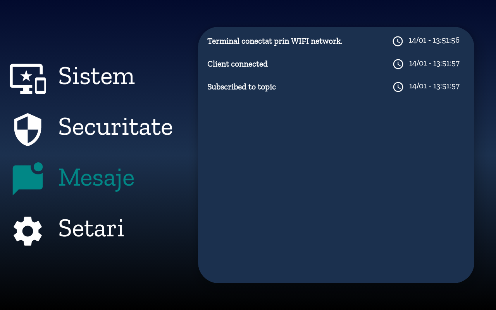

Updates for my personal smarthome system
Here's the latest software release for my FLAON smarthome system, now at the 23rd version. A few updates for NodeRed and android tablets' dashboard software.
First of all, the core of the FLAON system, the NodeRed has been reshaped with additional flows, subflows and palettes.
FlaON is still based on MQTT communication as the main communication mode between tablets, devices, Pis and NodeRed. I intend to use Zigbee2MQTT, just for a larger devices support, in the near future.
All sensor devices have a dual communication mode based on mqtt and webthings
The Android app
A few improvements have been made to android app flaon23, starting with the android's daydream as a screensaver, the android structure and layout and finishing with the connected services.
The old alert icons were moved from the bottom of the screensaver to the top of it. The daily title event (if there is any) is now displayed as a text at the right bottom of the screen. The weather icons are bigger and colorful.

Main screen design
Somehow obsessed with a simple and clean design, the main screen design was changed. Now bigger text sizes, colorful backgrounds and images replace the old ones.
It's still used the materialcardview and constraintlayout but with a different approach.

Second screen design
The second screen is divided in four group cattegories (using navigation).


The events, system messages and errors have their own class and recyclerView.adapter. The sound notification was reintegrated (eliminated in a previous version of flaon) and it's based on TSS (english)